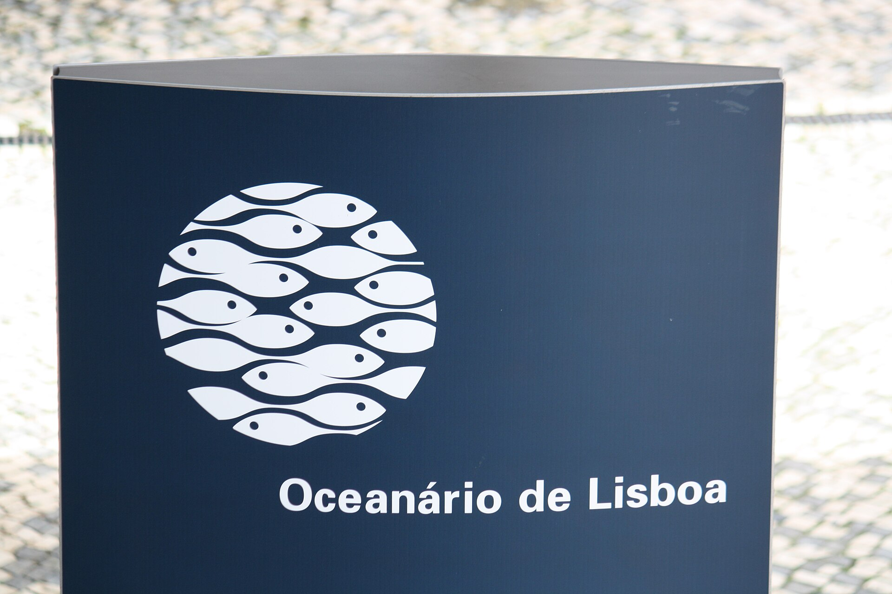
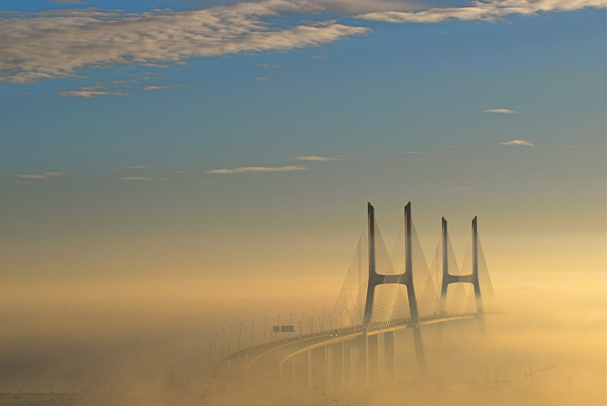
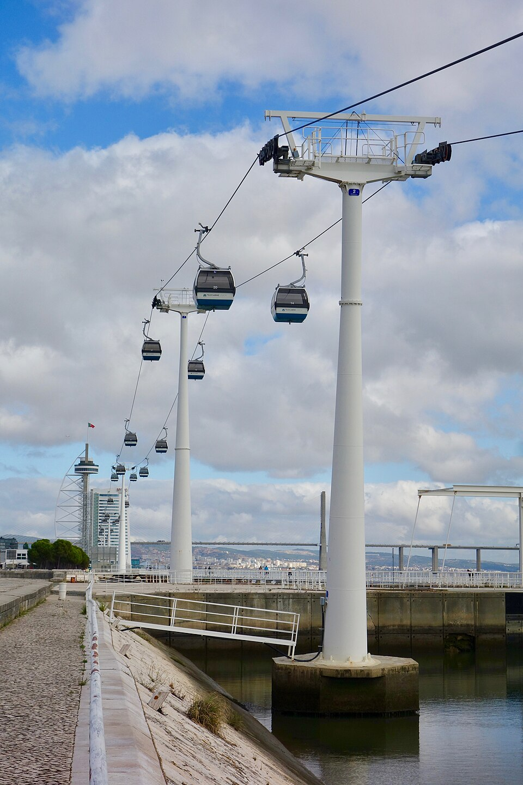
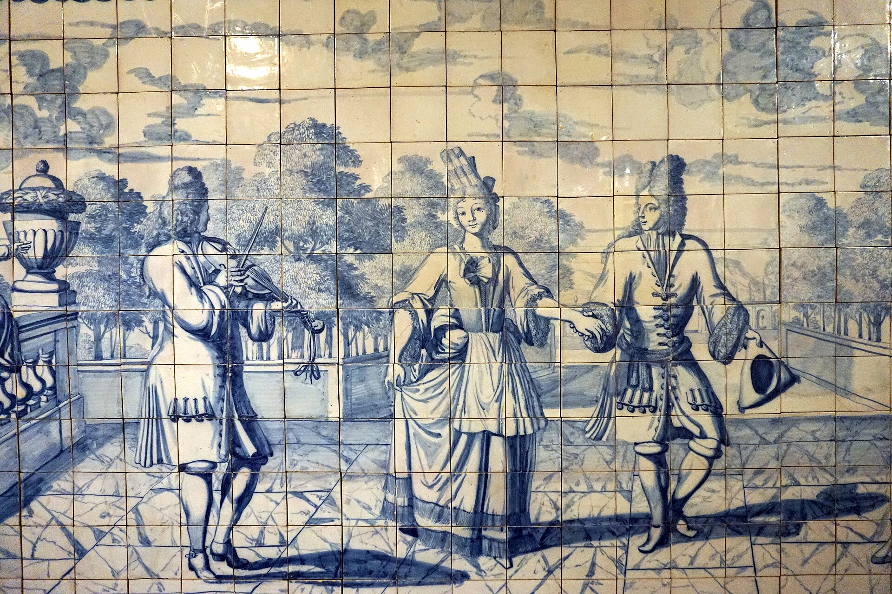
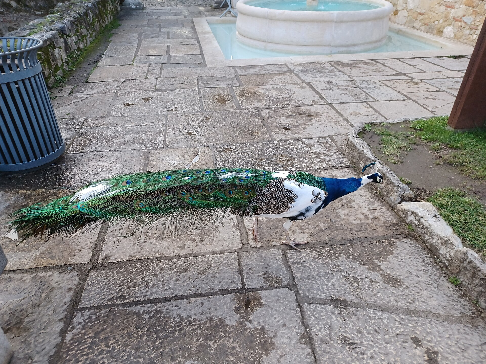
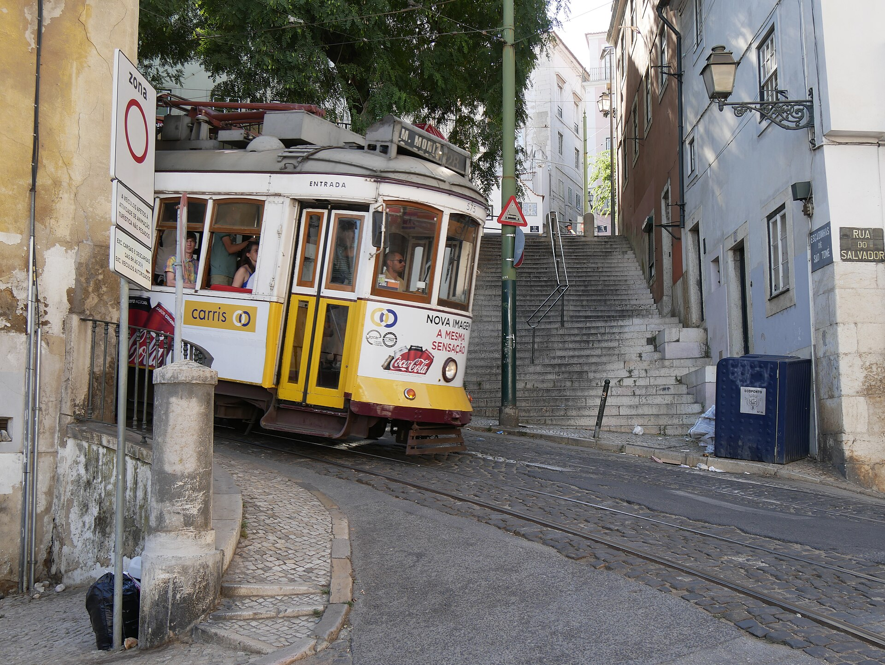
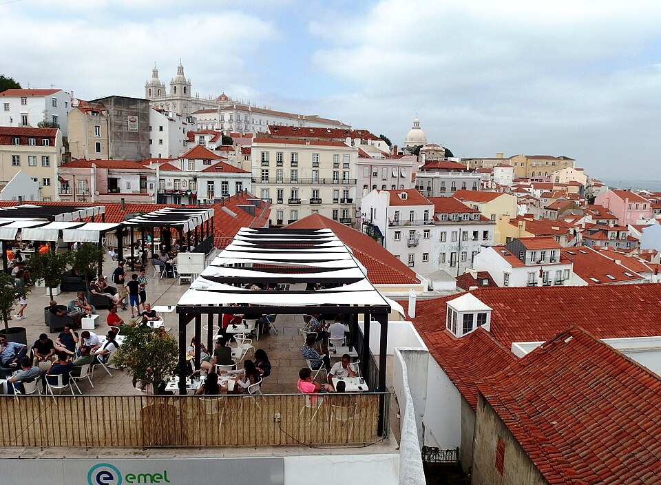
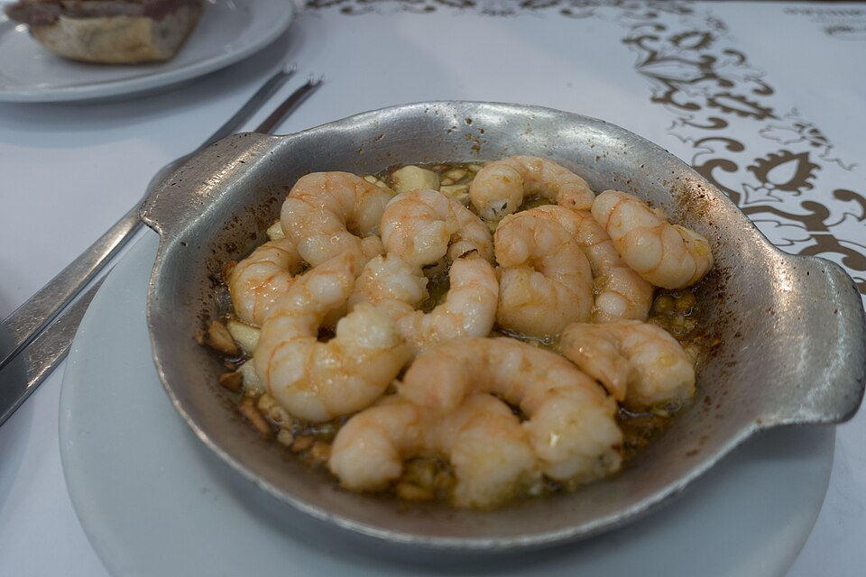

Two Days in Lisbon · Day 1 of 2 · East
In over the Vasco da Gama bridge: the modern riverfront and its aquarium, Portugal's signature tilework, and the medieval maze of Alfama at golden hour.
the aquarium morning
A sleek modern district on the river, built for Expo ’98: wide promenades, public art, splash fountains, and the best attraction in the city for kids. The easiest, lowest-stress way to begin.



Portuguese tile
Portugal’s signature blue-and-white tilework, housed in a former convent and ending in a huge tiled panorama of pre-earthquake Lisbon. Calm, uncrowded, quietly beautiful. This is the stop to drop if the group wants a slower day.

the medieval old town
Lisbon’s oldest quarter: a steep maze of tiled houses, washing lines, viewpoints and gelato. Touristy around the castle and the main terraces, but one lane off it’s still a living neighborhood. Best in the late afternoon, once the bus crowds thin.




Next → Day 2: Monuments, Makers & Downtown · Arrábida day trip